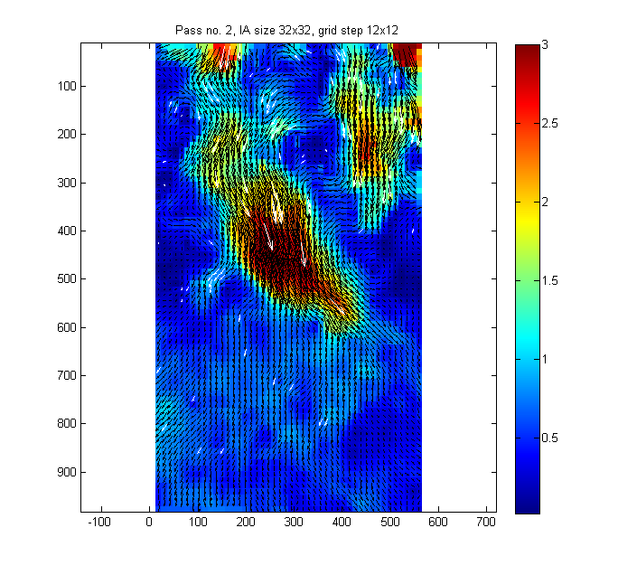
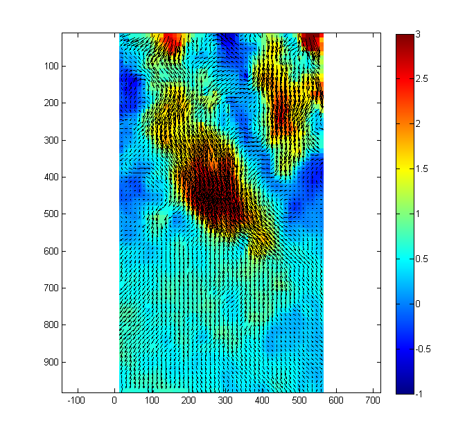

Example 06b - multiprocessor/multicomputer treatment
Due to various limitations, PIVsuite works mostly only on a single core of the computer. To improve performance when treating large sets of PIV images, it is advantageous to run several MATLAB instances in order to use all the power of the processor. Each running MATLAB can treat a different part of image sequence (the treatment of a part of image by a single Matlab instance is called "job").
PIVsuite is able manage distribution of PIV image pairs to several jobs comfortably. This example demonstrates how to use this feature.
Contents
- How to run this example
- Define image pairs to treat
- Settings for processing the first image pair
- Settings for processing subsequent image pairs
- Distribute treatment to several jobs
- Supress graphical output, when it is not available
- Visualize the results
- More details about distribution of the treatment between several jobs
How to run this example
- Before running this example, you might want to increase the number of image pairs in folder ../Data/Test Tububu (e.g., by copying them with another name).
- Start four independent Matlab instances on your computer.
- Run simultaneously this example in each Matlab instance. Thus, there will be four Matlab windows running simultaneously the same example. PIVsuite, via subroutine pivManageJobs, will adjust each of Matlab instance to treat approximately one fourth of image pairs.
- If something goes wrong (e.g., the user stops prematurely the treatment of some part of results), it is useful to erase lock files (extension .lck) in the output folder. For repeating the example, the user should erase all files from the output folder.
- Most of Matlabs will only treat the image pairs and save data to the disk, without storing results of all the image sequence. Only one Matlab instances will "remember" the results of the sequence.
- Running the example once more (after all image pairs are treated) will load the results from the files with results.
Other hints are:
- The treatment can be distributed also to several computers (typically if they access the same data on a shared disk via a network). In such a case, share a folder with data, and run some of matlabs on one computer and the remaining on another.
- Total number of jobs is given by pivPar.jmParallelJobs option below. This parameter should correspond to the number of Matlab instances running this example. Generally, fastes treatment is obtained if the number of Matlab instances is the same as the number of available processor cores.
- It is suitable to run several Matlab instances automatically from a command line in the Linux OS. A shell script for doing so is provided with this example (startntimes.sh).
Define image pairs to treat
Initialize the variable pivPar, in which parameters of PIV algorithm (such as interrogation area size) are defined. Initialize also variable pivData, to which results will be stored.
% Initialize variables clear; pivPar = []; % variable for settings pivData = []; % variable for storing results imagePath = '../Data/Test Tububu'; % folder with processed images (use slash (/) as path separator both on Windows % and Unix platforms; do not use backslash (\), and do not use 'filesep') % get list of images in the folder and sort them aux = dir([imagePath, '/*.bmp']); for kk = 1:numel(aux), fileList{kk} = [imagePath, '/', aux(kk).name]; end %#ok<SAGROW> fileList = sort(fileList); % Define image pairs pivPar.seqPairInterval = 1; % all image pairs will be processed in this example pivPar.seqSeqDiff = 1; % the second image in each pair is one frame after the first image [im1,im2] = pivCreateImageSequence(fileList,pivPar);
Settings for processing the first image pair
These settings will be used only for processing of the first image pair:
pivParInit.iaSizeX = [64 32 32 32 32]; % interrogation area size for five passes pivParInit.iaStepX = [32 16 12 12 12]; % grid spacing for five passes pivParInit.qvPair = {... % define plot shown between iterations 'Umag','clipHi',3,... % plot displacement magnitude, clip to 3 px 'quiver','selectStat','valid','linespec','-k',... % show valid vectors in black 'quiver','selectStat','replaced','linespec','-w'}; % show replaced vectors in white pivParInit = pivParams([],pivParInit,'defaults'); % set defaults as if treating single image pair
Settings for processing subsequent image pairs
Subsequent image pairs will be trated with these settings:
pivPar.iaSizeX = [32 32]; % IA size; carry only two iterations for subsequent image pairs pivPar.iaStepX = [12 12]; % grid spacing pivPar.anVelocityEst = 'previousSmooth'; % use smoothed velocity from previous image pair as velocity % estimate for image deformation pivPar.anOnDrive = true; % files with results will be stored in an output folder pivPar.anTargetPath = [imagePath,'/pivOut_multicore']; % directory for storing results pivPar.anForceProcessing = false; % if false, only image pairs, for which no file with results is % available, will be processed. Processing is skipped if file with results is available. If true, % processing is carried out even if result file is present. (Set this parameter to true if all % image pairs should be reprocessed, for example because of different setting of processing % parameters). pivPar.qvPair = {... % define plot shown between iterations 'Umag','clipHi',3,... % plot displacement magnitude, clip to 3 px 'quiver','selectStat','valid','linespec','-k',... % show valid vectors in black 'quiver','selectStat','replaced','linespec','-w'}; % show replaced vectors in white % Set all other parameters to defaults: [pivPar, pivData] = pivParams(pivData,pivPar,'defaultsSeq');
Distribute treatment to several jobs
Parameter jmParallelJobs defines, how many parallel jobs will be treating the image sequence (each job will treat a part of image pairs). Using soubroutine pivManageJobs, a part of image pair is attributed to the current job.
figure(1); pivPar.jmParallelJobs = 1; [im1,im2,pivPar] = pivManageJobs(im1,im2,pivPar); [pivData] = pivAnalyzeImageSequence(im1,im2,pivData,pivPar,pivParInit);
Job distribution read from file. Initialization: Analyzing first image pair... Results found (pivInit_Img000001_Img000002.mat). Skipping processing. Treating pair 1 of 39 (???)... Results found (piv_Img000001_Img000002.mat). Skipping processing. Treating pair 2 of 39 (???)... Results found (piv_Img000002_Img000003.mat). Skipping processing. Treating pair 3 of 39 (???)... Results found (piv_Img000003_Img000004.mat). Skipping processing. Treating pair 4 of 39 (???)... Results found (piv_Img000004_Img000005.mat). Skipping processing. Treating pair 5 of 39 (???)... Results found (piv_Img000005_Img000006.mat). Skipping processing. Treating pair 6 of 39 (???)... Results found (piv_Img000006_Img000007.mat). Skipping processing. Treating pair 7 of 39 (???)... Results found (piv_Img000007_Img000008.mat). Skipping processing. Treating pair 8 of 39 (???)... Results found (piv_Img000008_Img000009.mat). Skipping processing. Treating pair 9 of 39 (???)... Results found (piv_Img000009_Img000010.mat). Skipping processing. Treating pair 10 of 39 (???)... Results found (piv_Img000010_Img000011.mat). Skipping processing. Treating pair 11 of 39 (???)... Results found (piv_Img000011_Img000012.mat). Skipping processing. Treating pair 12 of 39 (???)... Results found (piv_Img000012_Img000013.mat). Skipping processing. Treating pair 13 of 39 (???)... Results found (piv_Img000013_Img000014.mat). Skipping processing. Treating pair 14 of 39 (???)... Results found (piv_Img000014_Img000015.mat). Skipping processing. Treating pair 15 of 39 (???)... Results found (piv_Img000015_Img000016.mat). Skipping processing. Treating pair 16 of 39 (???)... Results found (piv_Img000016_Img000017.mat). Skipping processing. Treating pair 17 of 39 (???)... Results found (piv_Img000017_Img000018.mat). Skipping processing. Treating pair 18 of 39 (???)... Results found (piv_Img000018_Img000019.mat). Skipping processing. Treating pair 19 of 39 (???)... Results found (piv_Img000019_Img000020.mat). Skipping processing. Treating pair 20 of 39 (???)... Results found (piv_Img000020_Img000021.mat). Skipping processing. Treating pair 21 of 39 (???)... Results found (piv_Img000021_Img000022.mat). Skipping processing. Treating pair 22 of 39 (???)... Results found (piv_Img000022_Img000023.mat). Skipping processing. Treating pair 23 of 39 (???)... Results found (piv_Img000023_Img000024.mat). Skipping processing. Treating pair 24 of 39 (???)... Results found (piv_Img000024_Img000025.mat). Skipping processing. Treating pair 25 of 39 (???)... Results found (piv_Img000025_Img000026.mat). Skipping processing. Treating pair 26 of 39 (???)... Results found (piv_Img000026_Img000027.mat). Skipping processing. Treating pair 27 of 39 (???)... Results found (piv_Img000027_Img000028.mat). Skipping processing. Treating pair 28 of 39 (???)... Results found (piv_Img000028_Img000029.mat). Skipping processing. Treating pair 29 of 39 (???)... Results found (piv_Img000029_Img000030.mat). Skipping processing. Treating pair 30 of 39 (???)... Results found (piv_Img000030_Img000031.mat). Skipping processing. Treating pair 31 of 39 (???)... Results found (piv_Img000031_Img000032.mat). Skipping processing. Treating pair 32 of 39 (???)... Results found (piv_Img000032_Img000033.mat). Skipping processing. Treating pair 33 of 39 (???)... Results found (piv_Img000033_Img000034.mat). Skipping processing. Treating pair 34 of 39 (???)... Results found (piv_Img000034_Img000035.mat). Skipping processing. Treating pair 35 of 39 (???)... Results found (piv_Img000035_Img000036.mat). Skipping processing. Treating pair 36 of 39 (???)... Results found (piv_Img000036_Img000037.mat). Skipping processing. Treating pair 37 of 39 (???)... Results found (piv_Img000037_Img000038.mat). Skipping processing. Treating pair 38 of 39 (???)... Results found (piv_Img000038_Img000039.mat). Skipping processing. Treating pair 39 of 39 (???)... Accomplished in 5.25 s, last pass 2.33 s, Subpix failure 0.38 %, Median-test rejection 3.01 % Replacing spurious velocity vectors... Finished in 0.09 s.
Supress graphical output, when it is not available
This part of code is useful when mass calculations are started on Unix/Linux machines. Usually, Matlab is run just from a command line and graphical output would yield an error, because graphical interface is not available. Therefore, if no output window is avaiable, this example is finished prematuraly. Also, the treatment is interrupted here, if no data are output from the treatment (this is the case for most of jobs, as they are not "remembering" results for all the image sequence).
if ~isstruct(pivData)|| ~usejava('jvm') || ~usejava('desktop') || ~feature('ShowFigureWindows') return; end
Visualize the results
Show a movie:
figure(2); for kt = 1:pivData.Nt pivQuiver(pivData,'TimeSlice',kt,... % choose data and time to show 'V','clipLo',-1,'clipHi',3,... % vertical velocity, 'quiver','selectStat','valid'); % velocity vectors, drawnow; pause(0.04); end
More details about distribution of the treatment between several jobs
For more details, see description available in subroutine pivManageJobs.m.